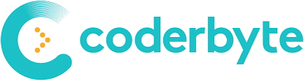
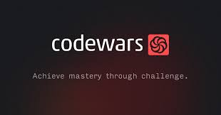

Sumário
1. TopCoder
O TopCoder é uma das plataformas on-line originais de programação competitiva. Lá, você encontra uma lista de desafios com algoritmos do passado que você pode resolver por conta própria, on-line e diretamente, usando seu editor de código. As Single Round Matches do site são populares e são oferecidas algumas vezes ao mês em horas específicas. Nelas, você pode competir contra os outros resolvendo desafios o mais rápido possível para ter as melhores pontuações.
2. Coderbyte
O Coderbyte oferece mais de 200 desafios de programação, que você pode resolver diretamente on-line em uma entre 10 linguagens de programação. Os desafios vão de fáceis (encontrar a maior palavra em uma string) a difíceis (imprimir a correspondência de maior cardinalidade em um grafo). Eles também oferecem uma coleção de tutoriais de algoritmos, vídeos introdutórios e cursos de preparação para entrevistas. Diferente do HackerRank e de outros sites da web semelhantes, você pode ver soluções de outros usuários para qualquer um dos desafios, além das soluções oficiais publicadas pelo Coderbyte.
3. Project Euler
O Project Euler fornece uma grande coleção de desafios relacionados à ciência da computação e da matemática. Os desafios tipicamente envolvem escrever um pequeno programa para descobrir a solução para uma fórmula matemática ou equação interessante, como encontrar a soma dos dígitos de todos os números que precedem cada número em uma série. Você não pode programar a solução diretamente no site em um editor de código, mas precisa escrever uma solução em seu próprio computador e enviar a solução para o site.
4. HackerRank
O HackerRank fornece desafios para vários domínios diferentes, como Algoritmos, Matemática, SQL, Programação Funcional, AI e mais. Você pode resolver todos os desafios diretamente on-line. Eles fornecem uma discussão e um quadro de melhores pontuações para cada desafio. A maioria dos desafios tem um editorial que explica mais sobre o desafio e sobre como abordá-lo para chegar a uma solução. Apesar do editorial, não é possível ver, no momento, as soluções dos outros usuários no HackerRank. O HackerRank também dá a possibilidade de os usuários enviarem inscrições e se inscreverem para empregos por meio da solução de desafios de programação patrocinados por algumas empresas.

5. CodeChef
O CodeChef é um site indiano de programação competitiva que fornece centenas de desafios. Você consegue escrever o código em um editor on-line e ver uma coleção de desafios separados em categorias diversas, dependendo do seu nível de habilidade. Eles têm uma grande comunidade de programadores que contribuem nos fóruns, escrevem tutoriais e participam das competições de programação do CodeChef.

6. Exercism.io
O Exercism é um site de desafios de programação que oferece mais de 3100 desafios em 52 linguagens de programação diversas. Depois de escolher a linguagem que você quer dominar, você faz os desafios de programação diretamente de sua máquina. Ele é um pouco diferente dos outros sites de desafios de programação, pois você pode trabalhar com um mentor após concluir cada desafio. O mentor revisa suas respostas on-line e ajuda você a melhorá-la, se necessário. Depois que suas respostas foram aprovadas e enviadas, você desbloqueia mais desafios.
7. Codewars
O Codewars tem uma grande coleção de desafios de programação enviados e editados por sua própria comunidade. Você pode resolver os desafios on-line diretamente no editor do site em várias linguagens. Você pode ver as discussões de cada um dos desafios, bem como as soluções dos outros usuários.
8. LeetCode
O LeetCode é um juiz online conhecido, que fornece uma lista de mais de 190 desafios que podem ajudar você a se preparar para entrevistas técnicas de emprego. Você pode resolver os desafios diretamente on-line em uma das 9 linguagens de programação. Você não pode ver as soluções dos outros usuários, mas recebe estatísticas para suas soluções, como a velocidade de execução do seu código em comparação com os códigos de outros usuários. Eles também têm uma seção de simulação de entrevista, as Mock Interviews, especificamente para a preparação para entrevistas de emprego. O site hospeda suas próprias competições de programação, além de ter uma seção para os artigos que vão ajudar você a entender melhor determinados problemas.

9. SPOJ
O Sphere Online Judge (SPOJ) é um juiz online que fornece mais de 20 mil desafios de programação. Você pode enviar seu código por meio de um editor on-line. O SPOJ também hospeda suas próprias competições e tem uma área para os usuários discutirem os desafios de programação. No entanto, eles não fornecem soluções ou editoriais oficiais como outros sites similares.

10. CodinGame
O CodinGame é um pouco diferente dos outros sites, pois, em vez de simplesmente resolver desafios de programação em um editor, você participa, de fato, na criação de códigos para jogos que você joga on-line diretamente. O jogo vem com uma descrição do problema, casos de teste e um editor, onde você pode escrever seu código em uma das mais de 20 linguagens de programação.